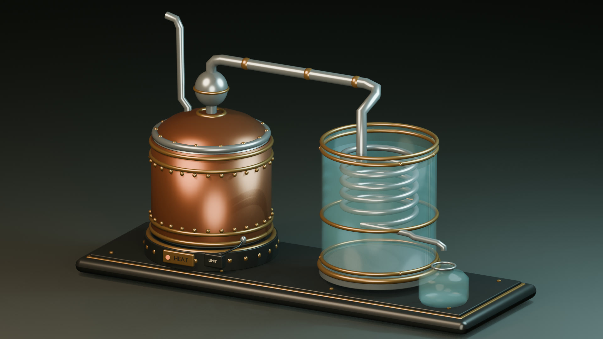

Set the foundation
Support the stainless kettle over controlled electric heat. Keep the decorative outer shell separate from every wetted surface.
An imagined machine for turning water into vapor—and back again. Take it apart, follow the flow, and discover the science inside.
Explore the machineA study in steam and separation

The Copper Crown wears the language of an old workshop, but its working path is deliberately simple. Select a part to learn what it does.
A stainless inner kettle holds the feed water. A controlled electric heater supplies heat from below; the copper and brass jacket is ornamental, not the water-contact surface.
View it in 3D ↑316L stainless · protected electric heat
Heat separates water vapor from much of what stays in the kettle. A second, cooler circuit takes the heat away so that vapor can become liquid again.
The heater warms the batch. Near its boiling point, water absorbs a great deal of energy to change phase into vapor. Dissolved salts and many other nonvolatile substances mostly remain in the kettle.
Liquid water → water vapor
Watch the apparatus come together, then trace the invisible journey from the heated kettle to the cooling coil and the open receiver.
A narrated view of the major parts, followed by the path of heat, vapor, and condensate.
Meet the Copper Crown. A stainless steel kettle sits inside an ornamental jacket, above a protected electric heater. A domed lid catches splashes. The riser carries vapor onward, while a separate open vent gives it another escape. Vapor enters a descending steel coil inside a second vessel. Cool water surrounds the coil but never touches the product. A free-draining spout delivers the condensate into a separate, open glass carafe. Heat turns water into vapor. The coil gives that heat to the cooling water, and vapor returns to liquid. And there you have it: one journey, two changes of state.
An example set of materials and dimensions gives the machine its physical scale and shows how its parts fit together.
In this silent study, follow the lines from a close-up of the crown to the full apparatus, then watch its parts lift apart on the drafting sheet.
A drawing traces the kettle, crown, open vent, cooling coil and collection carafe. The parts separate into an exploded view before the sheet resolves with component views and illustrative dimensions. The table below describes the materials and example measurements.
| Component | Concept material & role | Illustrative scale |
|---|---|---|
| Boiling kettle | Cleanable 316L stainless vessel with a removable lid, smooth internal joints, and a food-contact-rated, heat-compatible silicone or PTFE seal. | ~180 mm inside diameter × 160 mm tall, with ~1 mm wall; ~4.1 L gross volume. Example fill: 2 L. |
| Heater & safeguards | A grounded, GFCI-protected electric heater sits under the kettle. A low-water cutoff, independent temperature protection, and a cooling-flow interlock control the heat. | 300 W in the energy example. |
| Crown & vapor line | 316L stainless splash-separating head and smooth, cleanable vapor path. Sanitary mechanical joints or stainless welds connect the wetted components. | Continuous path to the condenser, with a separate, always-open boiler vent. |
| Condenser | Five-turn descending 316L tube in an open borosilicate-glass or stainless cooling-water vessel. Coolant enters low and exits through a high overflow; a separate flow sensor interlocks the heater. | ~12 mm outside / 10 mm inside diameter tubing, ~140 mm coil diameter, ~2.2 m of coil plus connections. Example coolant flow: 0.5 L/min. |
| Collector & exterior | Clean borosilicate glass or appropriate stainless receiver, open below the outlet. Copper, brass, patina, and finishes stay outside the product path. | Air gap at outlet; vessel sized for the intended batch. |
A closer look at how the pieces fit together, from the heated kettle to the open receiver.
Support the stainless kettle over controlled electric heat. Keep the decorative outer shell separate from every wetted surface.
Seat the removable splash head and connect the vapor riser. Allow access to inspect and clean the interior.
A separate open vent gives vapor another route to the atmosphere. Some steam can escape through it.
Connect the vapor line to the top of a continuously descending coil, immersed in a separate open cooling bath.
Arrange coolant in low and overflow out high. The coil outlet drains freely above an open collection vessel; the two water paths never join.
A thermal cutoff and cooling-flow sensor can switch the heater off if the kettle gets too hot or cooling stops.
The condenser moves heat out of the vapor and into the cooling water. Use the sliders to explore how heater power and cooling flow affect an idealized batch.
Water near atmospheric boiling needs about 2,257 kJ per kilogram to vaporize. Even if every watt of the heater went into evaporation:
That is an upper bound after warmup, assuming roughly 1 kg per liter. Real output would be lower because heat escapes, liquid warms, and some steam can leave through the vent. For perspective, warming 2 L from 20 °C to 100 °C alone takes about 0.19 kWh—at least 37 minutes at 300 W, before vessel heating or losses.
If cooling water absorbs the full heater power, a simple heat balance gives an approximate temperature rise:
This heat balance assumes the cooling water absorbs all the heater power. Flow, inlet temperature, coil area and geometry all affect the result.
The outside area of 2.2 m of 12 mm tube is roughly 0.083 m². If the effective mean temperature difference were 40 °C, removing 300 W would require an overall heat-transfer coefficient of about:
The effective heat-transfer coefficient depends on the steam and air mixture, tube-wall resistance, water motion, fouling, and the temperature profile.
Many dissolved salts and metals remain in the kettle as water becomes vapor. Microorganisms are generally left behind too.
Some volatile chemicals and pesticides can evaporate along with the water. Microbes can also regrow on cooling coils between uses.
Note: This untested design is an educational concept, not a construction plan or a guarantee of safe drinking water.